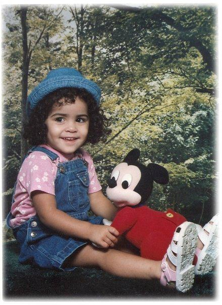
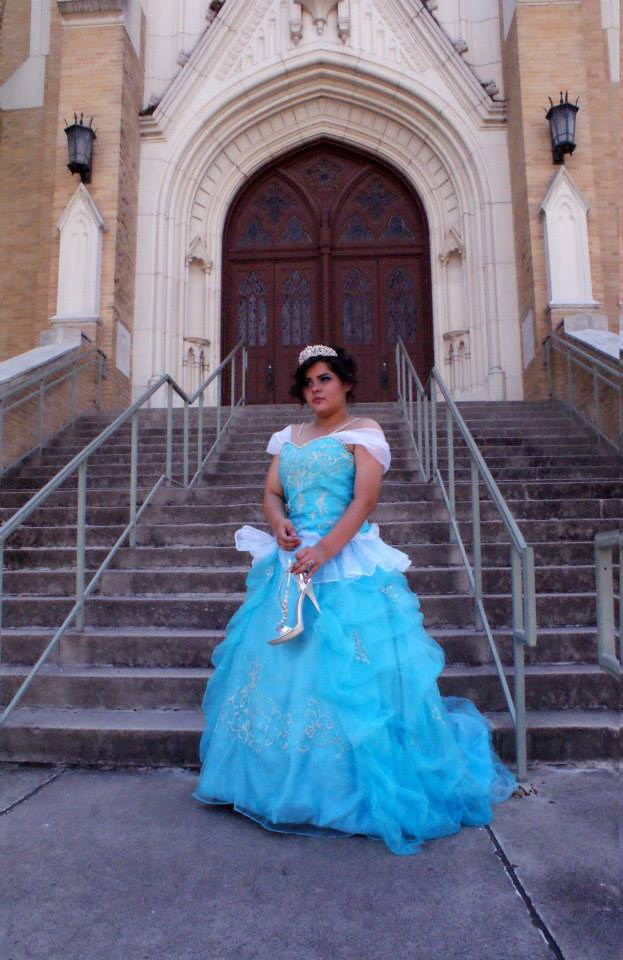
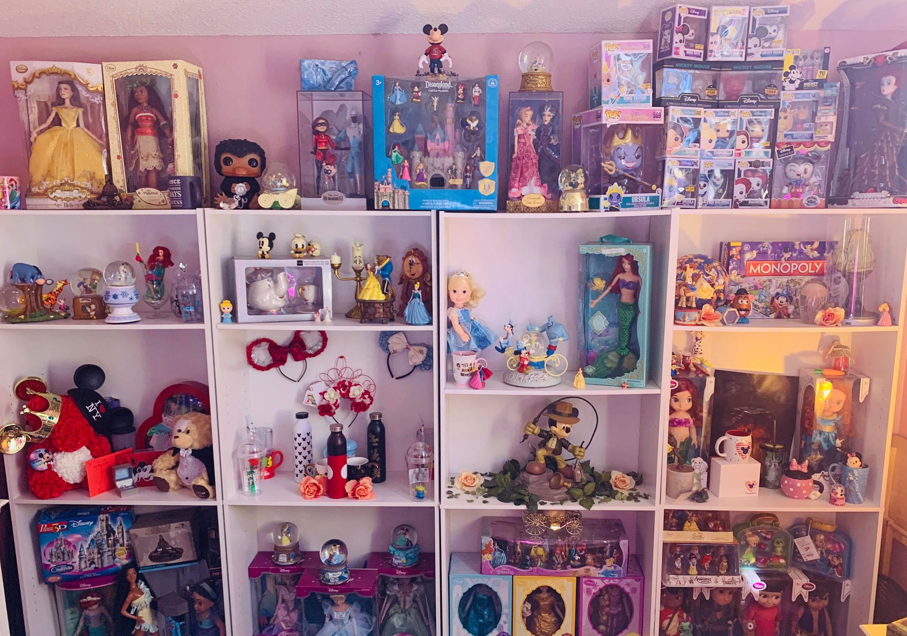

This is a picture of the creator of Disney.You can also drag it around!
My Obsession With Disney
When I was young
Ever since I was young I had always loved Disney. I remember being obsessed with it as a child... It all started with the movies, just me binge watching Disney movies 24/7 and wanting all my birthdays Disney themed. I wanted a Disney room but I always shared my room with my sister. That is until we moved to a new house and finally had a room to myself. I spent so much time trying to make my room perfect and I loved it. I remember my mom and I would spend hours painting the walls, we painted the roof like the sky and the walls pink with lots of Disney stickers. My mom even made a big mural on one of the walls with the helps of a projector painted and it was amazing. That's when I began collecting dolls but these were Disney barbie dolls. I wish I had pictures of my room back then. However, here is a picture of me when I was younger.
Quinceañera
 In Puerto Rico and a lot of hispanic places things like "quinceañeras" are very popular. So, when I became of age to have one I decided to make it Disney themed as well. I actually did it themed on my favorite disney princess Cinderella. The cake was Cinderella, my dress was blue and had little cinderella accents, table decor was cinderella just basically everything had a little bit of Cinderella. It was absolutely beautiful! I look back on all the images from that day and honestly it was like a princes fairytale. I am extremely grateful to my family that made that possible.
My Collection
 I have been collecting Disney figurines, dolls and etc. ever since I remember. As a young girl I first began to collect Disney barbie dolls and then it progressed. Currently, if you walk into my room you literally feel like you are in Disney world. From the walls to a chandelier to 4 huge bookcakes full of limited edition disney collectibles to my vanity to my makeup to everything it is Disney filled. Even little stickers on the wall (it's all about detail). I have been gathering and increasing my collection ever since I was younger. Every time I go to Disney park I go crazy and even when Disney releases new limited edition dolls or collictibles. I am in love and honestly I don't think it will ever change even as an adult I see myself going crazy at the disney store with my children. Whoever thinks thats weird is a hater! The image above is just a small section of my room.